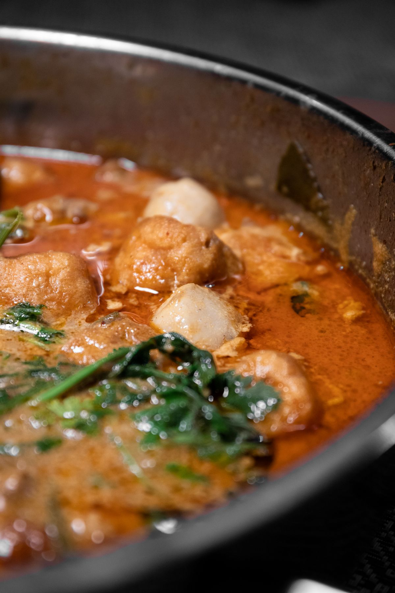
冒菜 性价比之王￥12 ~ 18
食堂二楼
自选荤素，红汤打底，米饭管够。期末周续命首选，记得多要一勺折耳根。
按觅食半径整理，点击选项卡切换。人均价格都是真实水平，欢迎投稿补充。

食堂二楼
自选荤素，红汤打底，米饭管够。期末周续命首选，记得多要一勺折耳根。
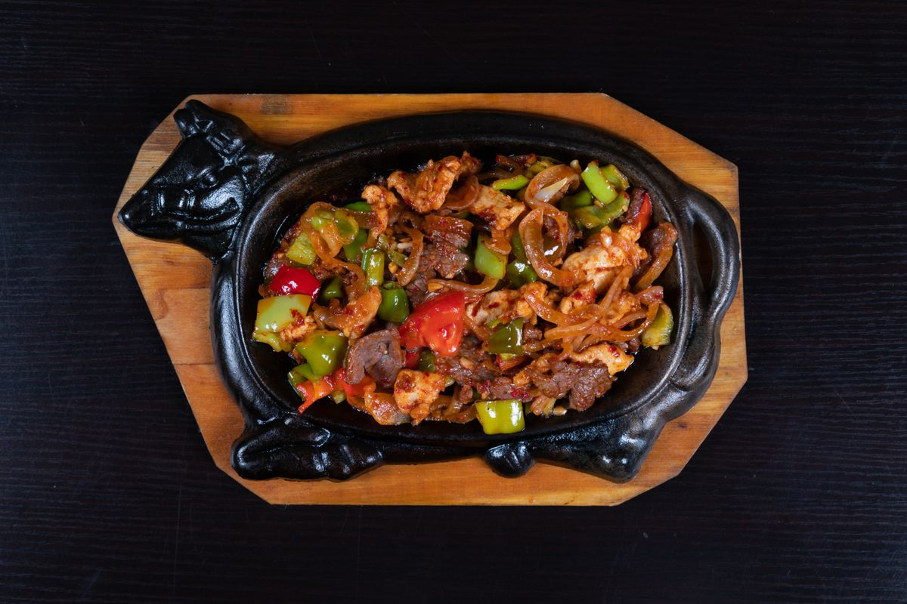
食堂三楼
微微辣就已经很够劲了，土豆片和午餐肉是必点，两个人一锅刚好。
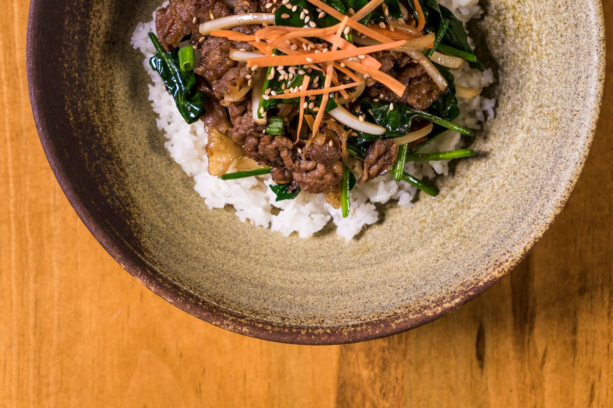
食堂一楼角落窗口
现点现炒锅气足，青椒肉丝和番茄炒蛋最稳，下课晚去要排队。
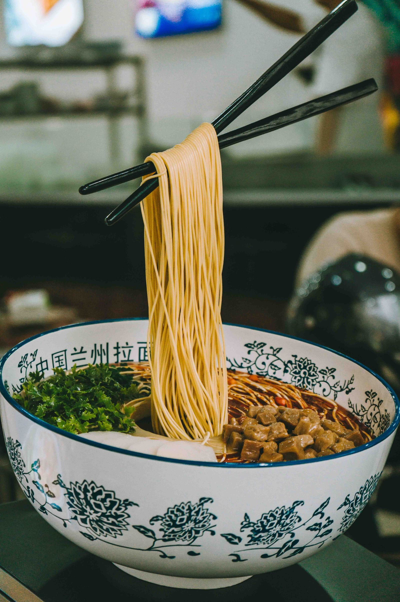
食堂一楼
不想吃辣的那天的避风港，加个蛋加份牛肉，汤都能喝完。
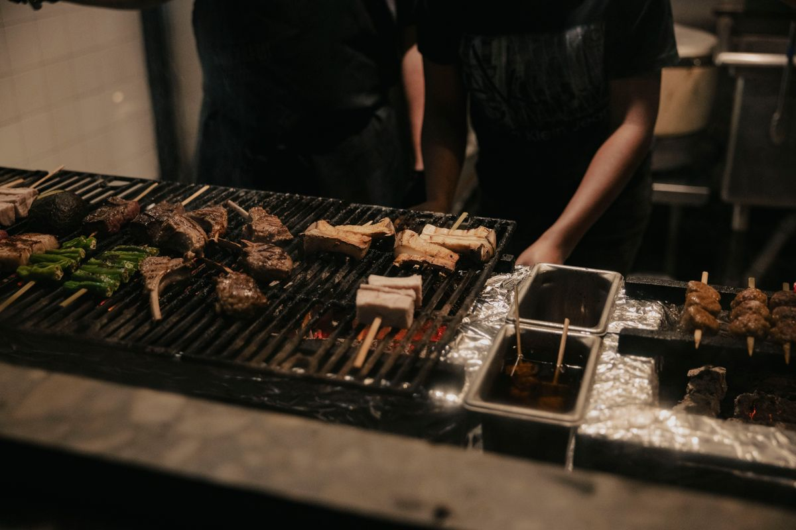
回龙湾小吃街 · 出校门步行几分钟
苕皮烤到表面起泡，夹酸萝卜粒和海椒面，趁热咬一口会爆汁。街口第一家要排队，往里走两家不用等。
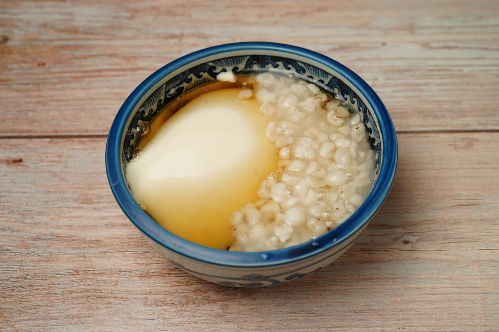
回龙湾巷子里
嫩豆花 + 一碟蘸水 + 甑子饭管添。重庆人最朴实的正餐，饭量大的同学的快乐老家。
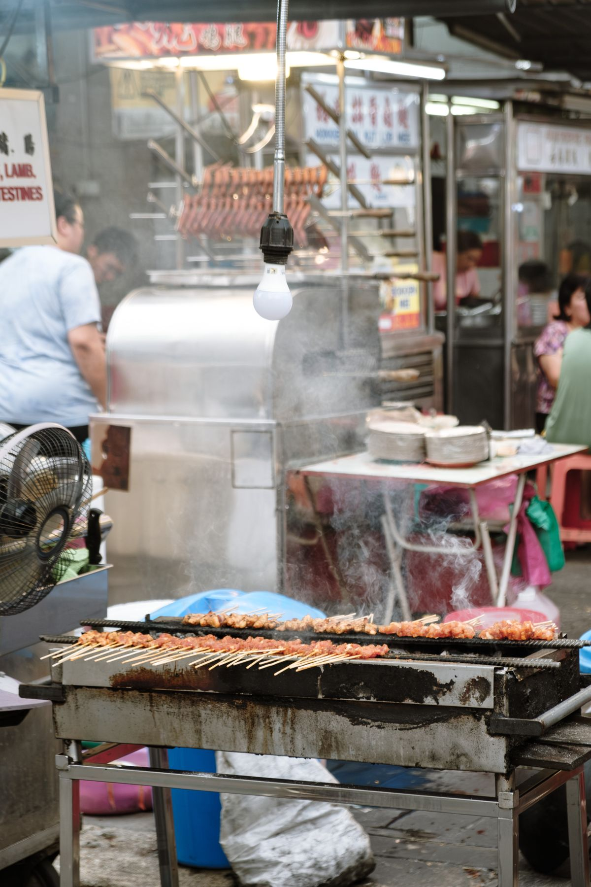
回龙湾街区
几个同学一起去才划算，牛肉和鸭肠多拿。数签签的那一刻最刺激，也最容易超预算。
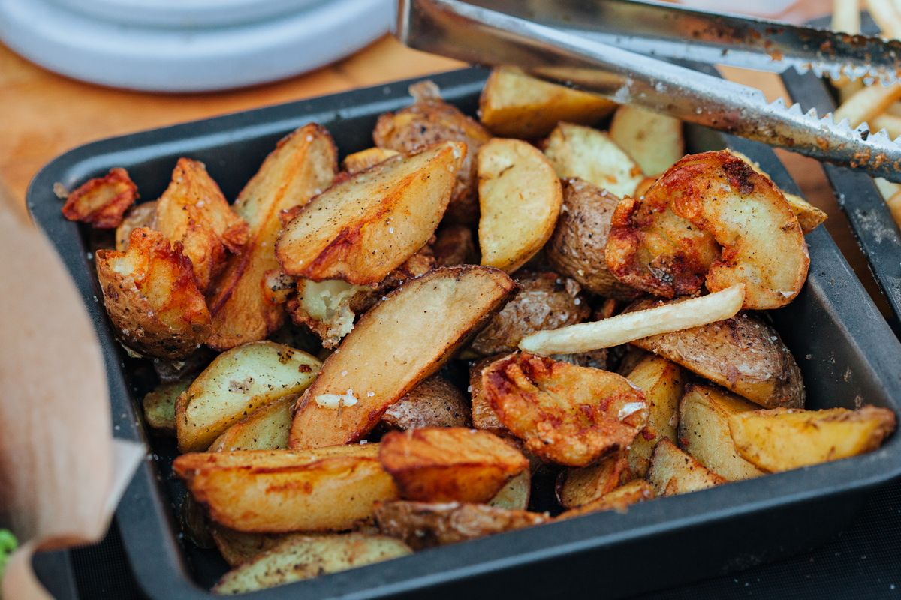
回龙湾街边摊
炸到外壳焦脆再拌料，海椒面多放才够味，边走边吃才对。
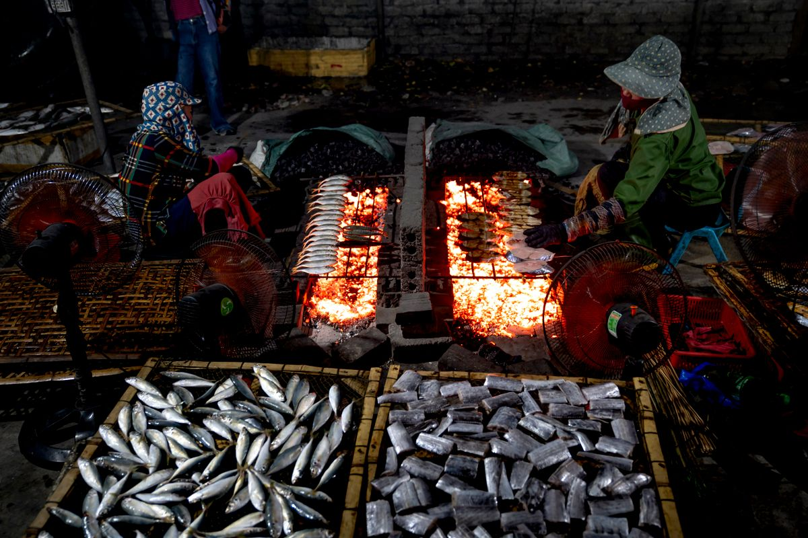
六公里沿线
藏在巷子里的老店，鱼现杀现烤，配一盆豆花和啤酒。人多去才划算，记得提前打电话留鱼。
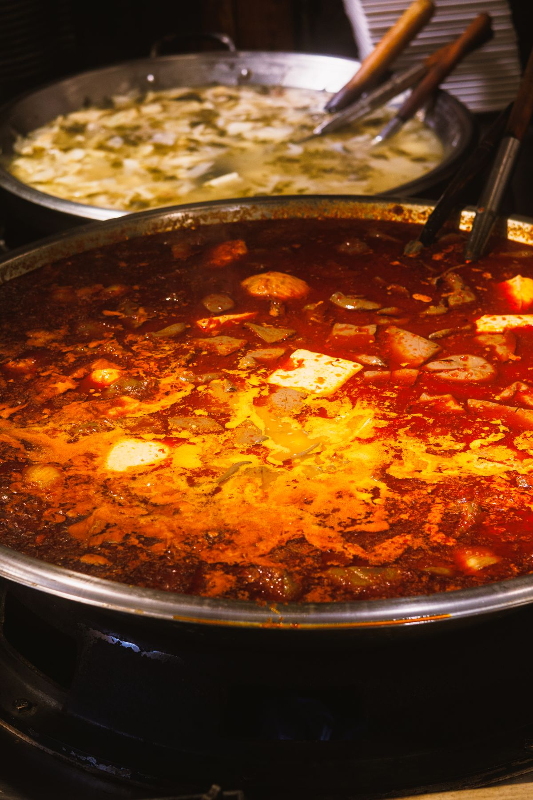
五公里 · 居民楼下
比南山上便宜，锅底照样正宗。九宫格老油，毛肚七上八下，学生过生日的标准配置。
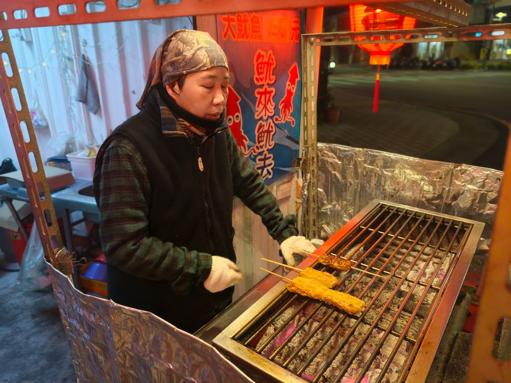
五公里夜宵摊
烤脑花、烤茄子、烤鸡翅，配冰饮料。考试周结束的那顿夜宵，是最香的。